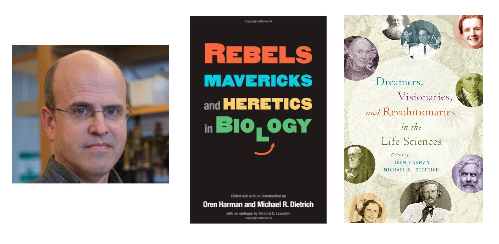
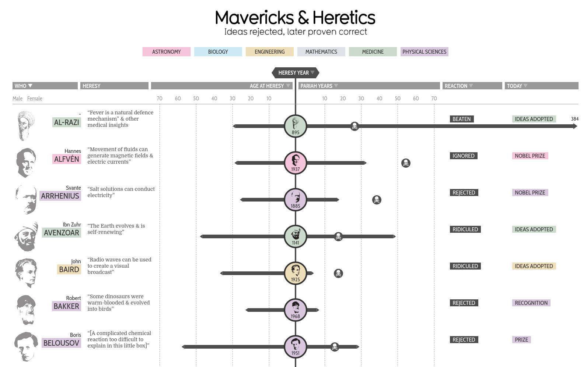

És una tècnica de visualització de dades que ens permet representar, en aquest cas, dades biogràfiques, on tenim un fil conductor que és el temps i amb unes fases que podríem definir com a fracàs - reconeixement - èxit
Mavericks and Heretics, (Revels i heretges), com a tema no és nou, és recurrent a la història humana, sobretot en tenim exemples en el camp del coneixement humà i és una cosa que ha passat, passa i passarà, degut a la naturelesa humana. Com a referència podem citar a Michael R. Dietrich, (bibliografia del 2008 i 2018)

Com a visualització, podem dir que és una tècnica creada per David McCandless i el seu equip l'any 2017, (https://informationisbeautiful.net/visualizations/mavericks-and-heretics/).

Només he trobat l'estructura creada per McCandless. Però podem dir de manera general que tenim un personatge, seguit d'una informació sobre el personatge, una dada quantitativa, una part central qiue divideix la visualització, una dada quantitativa que pot els anys d'alguns fets, com la mort i el reconeixement, i finalment alguna dada addicional.
Els tipus de dades inicialment són dades biogràfiques, però podríem fer una extrapolació i considerar dades com ara invents, característiques (utils/inutils) de l'evolució biològica o també es podría adaptar a les fake news o teories de la conspiració.
Tenim visualitzacions interessants sobre, en el nostre cas, de personatges d'una manera sintetitzada.
Ara bé és informació molt restringida i limitada.
Dades: Pintors famosos postmortem
Eines: VS code, (HTML, CSS, JS)
Seguint el consell d'Enrico Bertini, he ROBAT la idea de Information is Beautiful i he partit de la plantilla de la seva web. (Neteja exhaustiva i adaptació a les meves dades)
Val a dir que pel camí he perdut la responsiveness de la web.
https://www.jaspersoft.com/articles/what-is-a-box-plot
https://www.atlassian.com/data/charts/box-plot-complete-guide